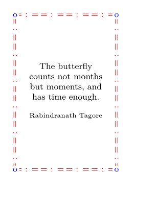

Imagine you want to create a frame which consists out of one glyph or a combination of different glyphs in order to make a decorative border. For this purpose a series of such elements should be placed on the bar as pictures, evenly spaced. Probably you want to have at the end of the bar a different glyph inserted as a picture too.
The following code is working but the last picture is not the expected glyph. One would expect 14 times the "?" and at the end of the bar a "*":
-
\starttext \startMPpage picture PicA ; PicA := textext("*"); picture PicB ; PicB := textext("?"); numeric Step ; Step := 2cm div bbwidth(PicB) ; for i = 1 upto Step : draw PicB shifted (i*5mm,0) ; endfor ; draw PicA ; \stopMPpage \stoptext
Gives:
What you get is 15 "?" but no "*"!
In order to get this corrected one needs to calculate the boundingbox of the "?" on beforehand. Hans Hagen provided this solution on 14-10-2014.
-
\starttext \startMPcalculation path PicX ; PicX := boundingbox textext("?") ; \stopMPcalculation \startMPpage picture PicA ; PicA := textext("*"); picture PicB ; PicB := textext("?"); numeric Step ; Step := 2cm div bbwidth(PicX) ; % numeric Step ; Step := 2cm div bbwidth(PicB) ; for i = 1 upto Step : draw PicB shifted (i*5mm,0) ; endfor ; draw PicA ; \stopMPpage \stoptext
Gives:
-

Now you get 14 "?" and the "*".
A Full Example
-
\setupbodyfont [8pt] \defineoverlay[Myframe][\reuseMPgraphic{Frame}] \setuppapersize[A8][A8] \setuplayout [topspace=5mm, backspace=5mm, height=middle, width=middle, header=0pt, footer=0pt] \starttext % ======== Definition of the frame in Metafun ========== \startMPcalculation path PicX ; PicX := boundingbox textext("= : =") ; \stopMPcalculation \startreusableMPgraphic{Frame} numeric u,v,xshift,yshift,picwidth,remnant,nelements; u := OverlayWidth; v := OverlayHeight; path p,w; p := unitsquare xscaled u yscaled v; w := fullcircle scaled 8pt; picture Edgepic,Linepic[]; color edgedotcolor,linelementcolorA; edgedotcolor := blue; linelementcolorA := red; Linepic[1] := textext("\rotate[rotation=90]{= : =}"); Linepic[2] := textext("= : ="); Edgepic := textext("o"); %Calculations for the horizontal frame-element placement: % In order to make this work, the width of the line element needs to be calculated on beforehand. % path PicX; PicX := textext(")("); picwidth := bbwidth(PicX); nelements := u div picwidth; remnant := u mod picwidth; xshift := picwidth + remnant/nelements; Linepic[3] := Linepic[2] shifted (0.5*picwidth,0); for a = llcorner p, ulcorner p : for i = 1 upto nelements : draw Linepic[3] shifted ((xpart a + (i-1)*xshift),ypart a) withcolor linelementcolorA; endfor; endfor; %Calculations for the vertical frame-element placement: picheight := bbwidth(PicX); nelements := v div picheight; remnant := v mod picheight; yshift := picheight + remnant/nelements; Linepic[4]:= Linepic[1] shifted (0,0.5*picheight); for a = llcorner p, lrcorner p : for i = 1 upto nelements: draw Linepic[4] shifted (xpart a,ypart a + (i-1)*yshift) withcolor linelementcolorA; endfor; endfor; for i = llcorner p, lrcorner p,ulcorner p,urcorner p : fill w shifted (xpart i,ypart i) withcolor white; draw Edgepic shifted (xpart i,ypart i) withcolor edgedotcolor; endfor; % For frame-element positioning checking: % draw p; % \stopreusableMPgraphic % ========== \startframedtext [width=0.8\textwidth,height=0.8\textheight,frame=off,background=Myframe, align={middle,lohi}] The butterfly counts not months but moments, and has time enough. \blank {\tfx Rabindranath Tagore} \stopframedtext \stoptext
Gives:
- 
There is one important remark: The MPcalculation and the drawing itself must be inside \starttext ... \stoptext.